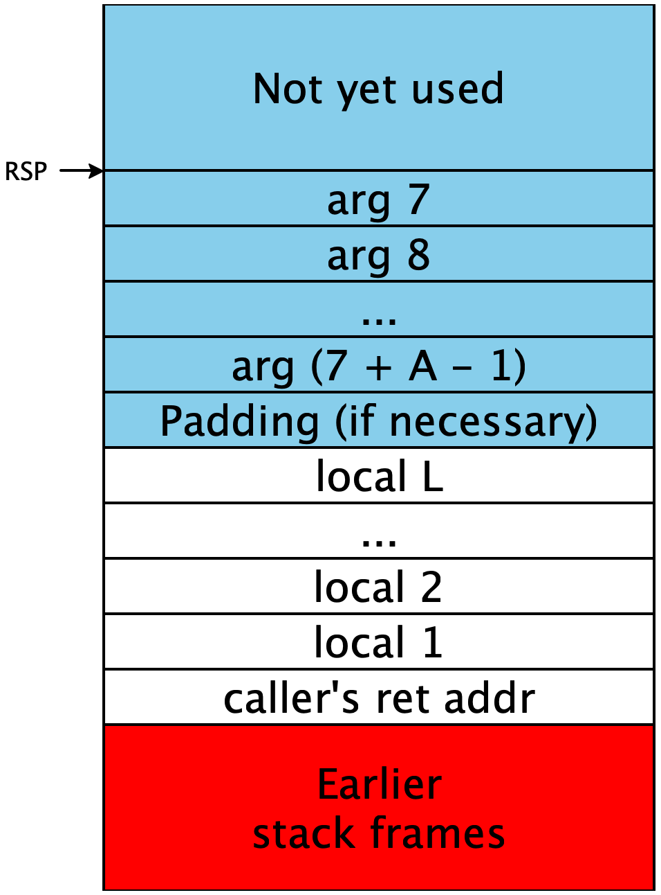
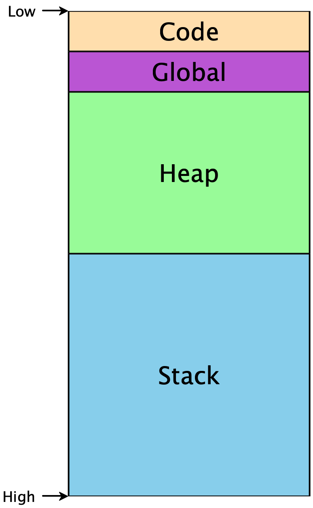

Lecture 12: First-class Functions
1 First-class Functions
In Lecture 8: Local Function Definitions and Tail Calls and Lecture 9: Global Function Definitions and Non-tail Calls, we introduced the ability for our programs to define functions that we could then call in other expressions in our program. Our programs included local function definitions, which can capture . This notion of a program was far more flexible than we had before, and lets us define many computations we simply could not previously. But one aspect was distinctly unsatisfying: functions are second-class entities in our language, they had their own separate namespace and and can’t be used the same way as other values in our programs.
We know from other courses, and possibly even from using features like
iterators in Rust in this course, that higher-order functions —
def applyToFive(it):
it(5)
in
def incr(x):
x + 1
in
applyToFive(incr)Do Now!
What errors currently get reported for this program?
Because it is a parameter to the first function, our compiler will
complain that it is not defined as a function, when used as such on line
2. Additionally, because incr is defined as a function, our compiler will
complain that it can’t be used as a parameter on the last line. We’d like to
be able to support this program, though, and others more sophisticated. Doing
so will bring in a number of challenges, whose solutions are detailed and all
affect each other. Let’s build up to those programs, incrementally.
2 Reminder: How are functions currently compiled?
Let’s simplify away the higher-order parts of the program above, and look just at a basic function definition. The following program:
def incr(x):
x + 1
end
incr(5)is compiled to something like1ignoring tag checking and tail call elimination:
incr:
mov RAX, [RSP - 8] ;; get param
add RAX, 2 ;; add (encoded) 1 to it
ret ;; exit
start_here:
mov [RSP - 16], 10 ;; pass 5 as an argument
call incr ;; call function
ret ;; exitThis compilation is a pretty straightforward translation of the code we have. What can we do to start supporting higher-order functions?
3 The value of a function —
3.1 Passing in functions
Going back to the original motivating example, the first problem we encounter is seen in the first and last lines of code.
def applyToFive(it):
it(5)
in
def incr(x):
x + 1
in
applyToFive(incr)Functions receive values as their parameters, and function calls push values
onto the stack. So in order to “pass a function in” to another function, we
need to answer the question, what is the value of a function? In the
assembly above, what could possibly be a candidate for the value of the
incr function?
A function, as a standalone entity, seems to just be the code that comprises its compiled body. We can’t conveniently talk about the entire chunk of code, though, but we don’t actually need to. We really only need to know the “entrance” to the function: if we can jump there, then the rest of the function will execute in order, automatically. So one prime candidate for “the value of a function” is the address of its first instruction. Annoyingly, we don’t know that address explicitly, but fortunately, the assembler helps us here: we can just use the initial label of the function, whose name we certainly do know. This is basically what in C/C++ we would call a function pointer.
In other words, we can compile the main expression of our program as:
start_here:
mov RAX, incr ;; load the address of incr into RAX
mov [RSP - 16], RAX ;; pass the address of incr as an argument
call applyToFive ;; call function
ret ;; exitThis might seem quite bizarre: how can we mov a label into a
register? Doesn’t mov require that we mov a value —calling a label in the first
place: the assembler replaces those named labels with the actual
addresses within the program, and so at runtime, they’re simply normal
QWORD values representing memory addresses. Note that we can’t
do this in one expression mov [RSP - 16], incr because the
incr is a 64-bit address and x64 doesn’t support moving a
64-bit literal into a memory location, so we need the intermediate
register.
3.2 Using function arguments
Do Now!
The compiled code for
applyToFivelooks like this:applyToFive: mov RAX, [RSP - 8] ;; get the param mov ???? ;; pass the argument to `it` call ???? ;; call `it` ret ;; exitFill in the questions to complete the compilation of
applyToFive.
The parameter for it is simply 5, so we pass
10 as an argument on the stack, just as before. The function to
be called, however, isn’t identified by its label: we already have its
address, since it was passed in as the argument to
applyToFive. Accordingly, we call RAX in order to
find and call our function. Again, this generalizes the syntax of
call instructions slightly just as push was generalized:
we can call an address given by a register, instead of just a
constant.
3.3 Victory!
We can now pass functions to functions! Everything works exactly as intended.
Do Now!
Tweak the example program slightly, and cause it to break. What haven’t we covered yet?
4 The measure of a function —
Just because we use a parameter as a function doesn’t mean we actually
passed a function in as an argument. If we change our program to
applyToFive(true), our program will attempt to apply true as a
function, meaning it will try to call 0xFFFFFFFFFFFFFFFF, which isn’t likely to
be a valid address of a function.
As a second, related problem: suppose we get bored of merely incrementing values by one, and generalize our program slightly:
def applyToFive(it):
it(5)
in
def add(x, y):
x + y
in
applyToFive(add)Do Now!
What happens now?
Let’s examine the stack very carefully. When our program starts, it moves
add onto the stack, then calls applyToFive:

That function in turn moves 10 onto the stack, and calls
it, which in this case is add:


But look, since add has been called with only one argument, it
will read from the free stack space in blue for its second
argument. So it adds 5 (encoded as 10) to an
arbitrary unspecified value, since as far as it knows that stack
location is where its second parameter should be.
We had eliminated both of these problems before via well-formedness checking: our function-definition environment knew about every function and its arity, and we could check every function application to ensure that a well-known function was called, with the correct number of arguments were passed. But now that we can pass functions around dynamically, we can’t know statically whether the arities are correct, and can’t even know whether we have a function at all!
We don’t know anything about precisely where a function’s code begins, so there’s no specific property we could check about the value passed in to determine if it actually is a function. But in any case, that value is insufficient to encode both the function and its arity. Fortunately, we now have a technique for storing multiple pieces of data as a single value: tuples. So our second candidate for “the value of a function” is a tuple containing the function’s arity and start address. This isn’t quite right either, since we wouldn’t then be able to distinguish actual tuples from “tuples-that-are-functions”.
So we choose a new tag value, say 0x3, distinct from the ones
used so far, to mark these function values. Even better: we now have
free rein to separate and optimize the representation for functions,
rather than hew completely to the tuple layout. As one immediate
consequence: we don’t need to store the tuple length —
Do Now!
Revise the compiled code of
applyToFiveto assume it gets one of the new tuple-like values.
The pseudocode for calling a higher-order function like this is roughly:
mov RAX, <the function tuple> ;; load the intended function
<check-tag RAX, 0x3> ;; ensure it has the right tag
sub RAX, 3 ;; untag the value
<check-arity [RAX], num-args> ;; the second word at stores the arity
<push all the args> ;; set up the stack
call [RAX + 8] ;; the first word stores the function address
add RSP, <8 * num-args> ;; finish the callNow we just need to create these tuples.
Exercise
Revise the compiled code above to allocate and tag a function value using this new scheme, instead of a bare function pointer.
5 A function by any other name —
While everything above works fine for top-level, global function definitions, how do we extend it to our local function definitions?
To start, let’s consider the simple case of non-recursive functions. If the function is not recursive, then we don’t need our FunDefs form at all: instead we can use a literal notation for functions, the same way that we can write boolean, number and array literals. You may be familiar with these from other languages: we call them lambda expressions, and they appear in pretty much all modern major languages:
Language |
| Lambda syntax |
Javascript |
|
|
C++ |
|
|
Rust |
|
|
Ocaml |
|
|
Technically, once we can use functions as values, any program with lambdas can
be desugared to use a local function definition. Any
lambda x1,...: e end can be desugared to
def foo(x1,...): e in foofoo is an arbitrary variable name.We can also rewrite any program using only non-recursive functions using lambdas instead as follows, e.g. our example above could be written as
let applyToFive = (lambda it: it(5) end) in
let incr = (lambda x: x + 1 end) in
applyToFive(incr)Then, all our functions are defined in the same manner as any other let-binding: they’re just another expression, and we can simply produce the function values right then, storing them in let-bound variables as normal.
Now let’s consider what happens when we try to extend our lambda lifting procedure from diamondback to this new form on the following illustrative program:
let f =
if g():
let seven = 7 in lambda x: x + seven end
else:
lambda y: y + 1
in
f(5)Here let’s assume g is some unknown globally defined function function.
Then we can’t determine locally which branch of the if will be
taken, we will either add seven or add one to 5. This
program makes perfect sense, but notice that if we naively apply our
lambda lifting, we run into a problem. Previously, we added each
captured variable as an extra argument, so if we did the same thing
here we would get the following, where we make up names for the
anonymous lambda functions:
def lambda1(seven, x): x + seven and
def lambda2(y): y + 1 in
let f = if g(): (let seven = 7 in lambda1) else: lambda2
in
f(5)But we run into a problem: now lambda1 takes two arguments
but lambda2 takes one. Additionally, if
g returns true we will call
f with only one argument, neglecting to "capture"
seven in any meaningful sense. Before we would have solved this by
adding seven to every place where lambda1 was
called, but now that functions are values that isn’t really
possible. And anyway, this call to f would need to be
applied to a different number of arguments when it calls
lambda1 vs lambda2. And if it seems like we
might be able to solve this by a sufficiently advanced analysis,
consider the fact that first class function values might be passed in
as arguments so it is not feasible to statically detect which captured
variables will be needed at each call site statically.
So instead, we will have to determine which extra arguments to pass dynamically, by including them as a third field in our function values. That is, our function values will now consist of an arity, a function pointer, and finally a (pointer to) an array of all the values captured by that function. This data structure is called a closure and we say it "closes over" the captured free variables. Then when we do lambda lifting, instead of adding each variable as an additional argument, we will package them up into an array, which we pass as a single argument. Then when we create a function value, we will pair up the function pointer and arity with an array of all the captured variables. We can do this by augmenting our intermediate representation with a new form for creating closures, analogous to our form for creating arrays:
def lambda1(env, x): let seven = env[0] in x + seven and
def lambda2(env, y): y + 1 in
let f = if g():
(let seven = 7 in make_closure(1, lambda1, [seven]))
else:
make_closure(1, lambda2, [])
in
call_closure(f, [5])So now the captured variables are all stored in the single environment parameter, and before we run the body, we project out all of the captured free variables.
Also notice that the function call f(5) will need to be
compiled differently as f is not a statically known
function definition, but instead a dynamically determined closure
value, so we will need to dynamically check its arity, and pass its
environment to it as an extra argument. We can implement this by
translating call_closure(f, args) to several other
internal forms:
let untagged = check_arity_and_untag(f, args.len()) in
let code_ptr = get_code(untagged) in
let env = get_env(untagged) in
ecall(code_ptr, (env; args))Where the primitives check_arity_and_untag,
get_code and get_env are internal forms that
manipulate the closure object. This way we can re-use our existing
implementation of external function calls from diamondback, as long as
we now allow for the address of the function we are calling to be
given dynamically.
Exercise
Augment your lambda lifting code to generate make_closure.
5.1 Compiling make_closure and function calls
Now that we have desugared away lambdas, we instead need to generate code to create closures at runtime. But we already know how to create heap-allocated values, we simply:
Move the arity, function pointer and environment into the next three available slots in the heap
Increment the heap pointer by 8 * 3
Return the previous value of the heap pointer, tagged with our closure tag 0x3
Correspondingly, we need to implement the primitives
(check_arity_and_untag, get_code and
get_env) for implementing closure calls, which are very
similar to the code for implementing tuples/arrays:
check_arity_and_untag: Check that a value is tagged as a closure and check its arity matches a given valueget_code: read the code pointer field of the closure objectget_env: read the environment field of the closure object
Since we re-use our diamondback implementation, we seamlessly support
both tail and non-tail calls. The only change is to allow for
jmp and call to use a register rather than a label.
6 Recursion
If we try even a simple recursive function —
let fac = (lambda n:
if n < 1: 1
else: n * fac(n - 1)) # ERROR: fac is not in scope
in fac(5)Since our language is dynamically typed it is actually possible to desugar recursive function definitions into lambdas using clever variants of the Y combinator, but such encodings inherently involve a closure allocation for each recursive call, which we should certainly avoid, especially without a garbage collector!
Then we need to see how to extend our treatment of lambdas to support mutually recursive closures, or put another way, adapt our lambda lifting to create closures at runtime.
Given a mutually recursive function definition,
let x1 = e1,
x2 = e2,
x3 = e3 in
def f(x,y): e4
and
def g(a,b,c): e5
in
e6Currently we lambda lift f and g unless they
are purely local. Now we need to make sure to lambda lift any function
that ends up being used as a closure as well. Our previous approach
gives us something like
def f(x1, x2, x3, x, y): e4'
and
def g(x1, x2, x3, a, b, c): e5'
in
let x1 = e1',
x2 = e2',
x3 = e3' in
e6'However this is no longer correct because the expressions
e6 might use f and g
closures. Furthermore, note that f and g are
now free variables in e4 and e5 so they should
be included in their captured variables! So let’s try to accommodate
these:
def f(x1, x2, x3, f, g, x, y): e4'
and
def g(x1, x2, x3, f, g, a, b, c): e5'
in
let x1 = e1',
x2 = e2',
x3 = e3',
f = ??,
g = ??,
in
e6'So how do we construct the closures for f and
g? Well first notice that their lambda-lifted versions are
not of the correct form for constructing a closure: they have many
extra arguments instead of a single env. So in addition to
the lambda lifted version we will generate a second version for
constructing closures that unpacks the closure and calls the original version:
def f(x1, x2, x3, f, g, x, y): e4'
and
def f_closure(env, x, y):
ecall(f, [env[0], env[1], env[2], env[3], env[4], env[5], x, y])
and
def g(x1, x2, x3, f, g, a, b, c): e5'
and
def g_closure(env, a, b, c):
ecall(g, [env[0], env[1], env[2], env[3], env[4], env[5]], a, b, c)
in
let x1 = e1',
x2 = e2',
x3 = e3',
f = make_closure(2, f_closure, [x1,x2,x3,f,g]),
g = make_closure(3, g_closure, [x1,x2,x3,f,g]),
in
e6'Do Now!
What went wrong?
We still haven’t solved the recursion problem: f’s
environment needs to contain the closures for f and
g, but they haven’t been defined yet! But this is a
familiar problem from low-level programming: to construct a data
structure with circular references, we can initialize the references
to be null and then update them once we’ve allocated the rest of the
structure. So here we can construct a closure with "null" references
to f and g, then use this to construct
closures and then after they are constructed update the environment to
point to the correct values:
def f(x1, x2, x3, f, g, x, y): e4'
and
def f_closure(env, x, y):
ecall(f, [env[0], env[1], env[2], env[3], env[4], env[5], x, y])
and
def g(x1, x2, x3, f, g, a, b, c): e5'
and
def g_closure(env, a, b, c):
ecall(g, [env[0], env[1], env[2], env[3], env[4], env[5]], a, b, c)
in
let x1 = e1',
x2 = e2',
x3 = e3',
env = [x1, x2, x3, 0, 0]
f = make_closure(2, f_closure, env),
g = make_closure(3, g_closure, env),
in
env[3] := f;
env[4] := g;
e6'Why does this work? Well notice that we won’t ever run the code
for f or g until we evaluate e6,
and so by the time f or g actually get’s
called, when it projects out env[3], it will have been
updated to point back to f itself. And we don’t perform
any unnecessary allocations: we only construct the
closures for f and g once when they are declared and these .
Exercise
Extend the compilation above to work for recursive functions
7 Avoiding Performance Degradation
Our functional snake language is now fairly elegant in its simplicity: the single notion of recursive functions, with a proper implementation of tail calls, allows us to implement any kind of looping construct we would like. But implemented naively as we’ve done so far, we get major performance regressions from our implementation of diamondback. In diamondback a program like
def fac(x):
def loop(x, acc):
if x == 0:
acc
else:
loop(x - 1, acc * x)
in
loop(x, 1)
in
fac(10)would be compiled fairly straightforwardly to direct jumps in assembly, with all intermediate values stored on the stack. With register allocation, we would do even better and store those locals all in registers.
However if we naively compile this program, we will interpret the uses
of fac and loop as using a closure, and
compile the calls to indirect calls, including loading values
from the heap. Here we see why high-level functional languages are
challenging to implement: it’s elegant and simple to express loops as
functions, but then it’s up to the language implementor to make sure
that those are compiled to simple jumps when possible. The best
functional language compilers work very hard to eliminate closures
when possible, and to minimize the size of the allocated objects. We
will be a bit less ambitious but we should at least make sure that
compiling simple programs like these requires no heap manipulation.
We can accomplish this by a simple pass that distinguishes between
calls to dynamically determined functions and "direct" calls to a
known function definition, which can be compiled exactly as before in
diamondback:
def fac(x):
def loop(x, acc):
if x == 0:
acc
else:
direct_call(loop, [x - 1, acc * x])
in
direct_call(loop, [x, 1])
in
direct_call(fac, [5])